I work on recommender systems and personalization — the production side, where retrieval has a latency budget and offline metrics have to predict the online ones. Lately, also LLM-based evaluation.
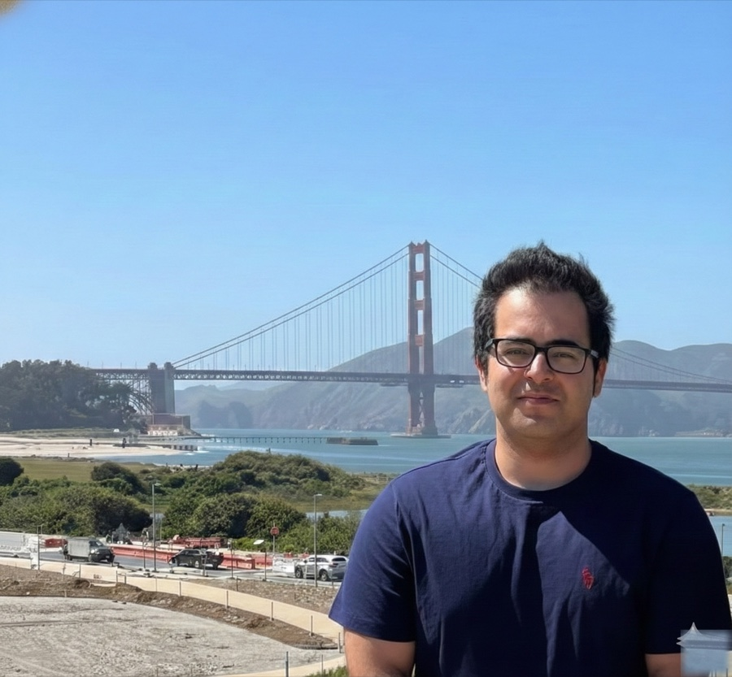
Highlights across recsys, evaluation, and risk-informed simulation.
Click any card to expand.
One tower for users, one for items, both trained with InfoNCE plus same-taxonomy hard-negative mining — random negatives only push the model to learn coarse categories, so the negatives have to come from inside the same taxonomy node to force fine-grained attribute discrimination.
Serving: ONNX Runtime for the user tower and an HNSW index over the item embeddings for low-latency retrieval at production scale.
Training: MosaicML Streaming for sharded reads across multiple GPUs, plus a bi-weekly warm-start strategy that meaningfully cut training compute compared to cold-start runs.
A multi-dimensional evaluation platform that quantifies semantic complementarity for recommender outputs — the kind of judgment that's hard to capture with point-wise offline metrics. The pipeline scores 7 orthogonal latent dimensions per candidate using Chain-of-Thought reasoning, structured as a declarative "human-proxy" judging schema so that individual dimensions can be audited, swapped, or retired without reshipping the evaluator.
A high-fidelity counterfactual offline simulation platform integrated with LLM agents. Features include "time-travel" historical sampling and self-adaptive metric tuning, built to minimize the sim-to-real gap before production deployment decisions.
An end-to-end computer vision inspection framework across multiple CTQ checkpoints — automated defect detection and station health monitoring. Multi-class object detection models in PyTorch, with operational decision logic and inference thresholds tuned to minimize false positives in high-throughput environments.
On the data side: a leakage-safe workflow on GCP/GCS + Label Studio, with targeted hard-negative mining to handle the physical-environment constraints (lighting drift, misalignment, class imbalance).
Each card opens to the full piece — figures, technical contribution, what was actually implemented.
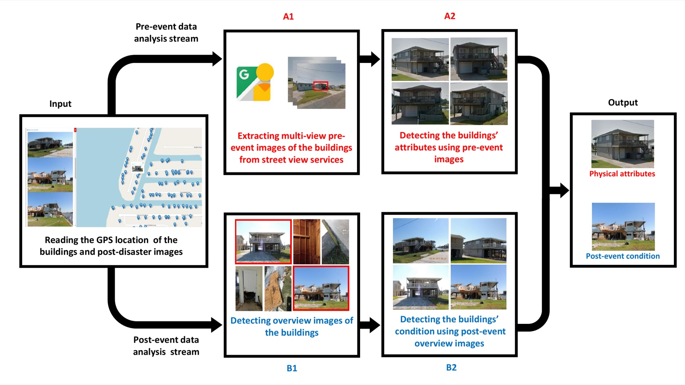
End-to-end pipeline. Input: a building's address. Output: a damage state. Google Street View for pre-event imagery, drone or satellite for post-event, Faster R-CNN to find the building in each frame, a depth model to disambiguate which of several visible buildings is the building, and a homography step to align them. The fusion is the part everyone underestimates — pre-event Street View is sharp but oblique; post-event drone is overhead and noisy; matching them requires a depth-aware registration that the obvious affine transform fails at.
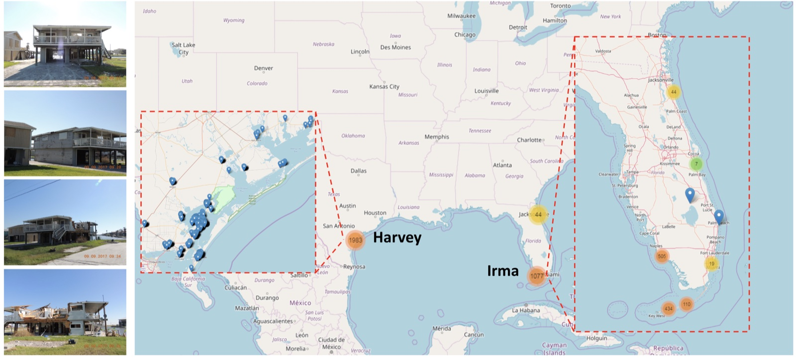
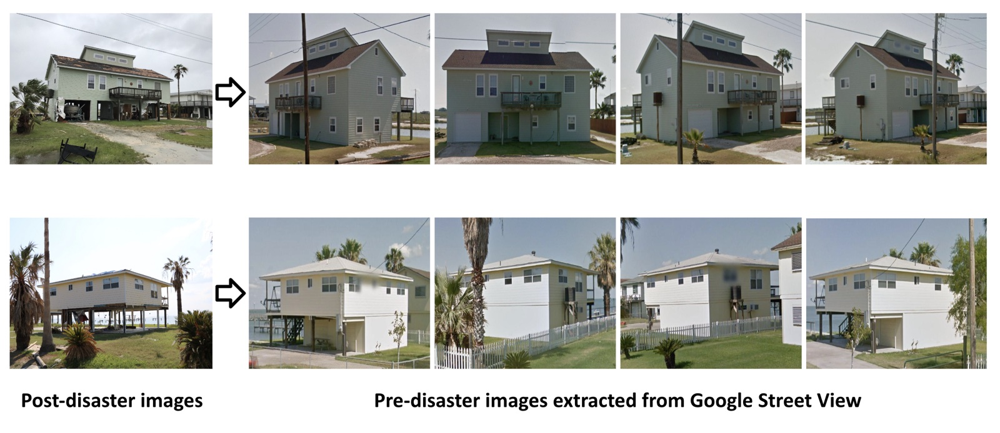
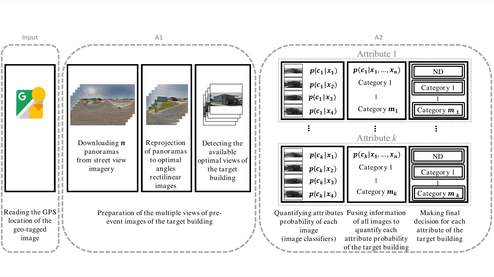
p(ck|x1..n). The move that makes it robust to occlusion / glare / wrong-building frames.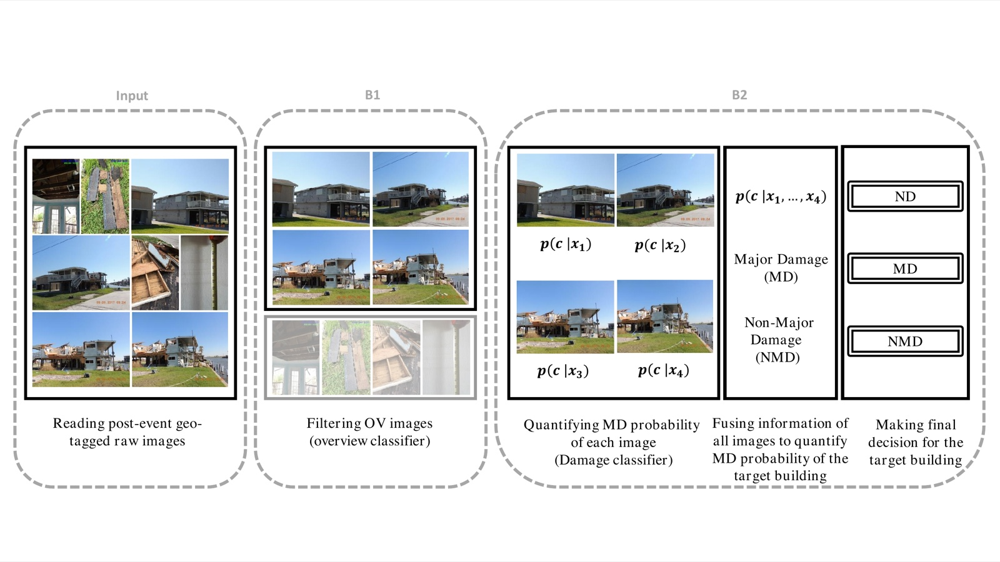
p(c|xi); information fusion produces p(c|x1..n) and a final decision: ND / MD / NMD.A resilience-based method for prioritizing post-event building inspections. The method allocates limited inspection resources by ordering buildings to maximize recovery of community function per inspector-hour, with damage-state uncertainty propagated through the prioritization.
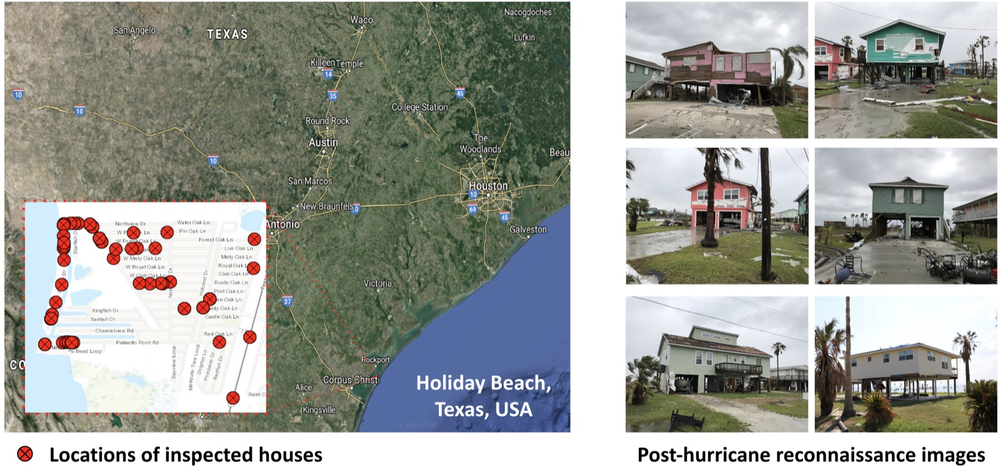
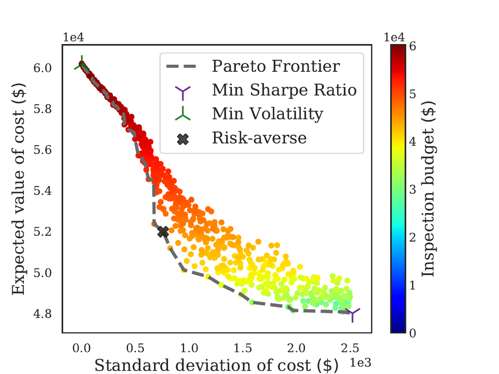
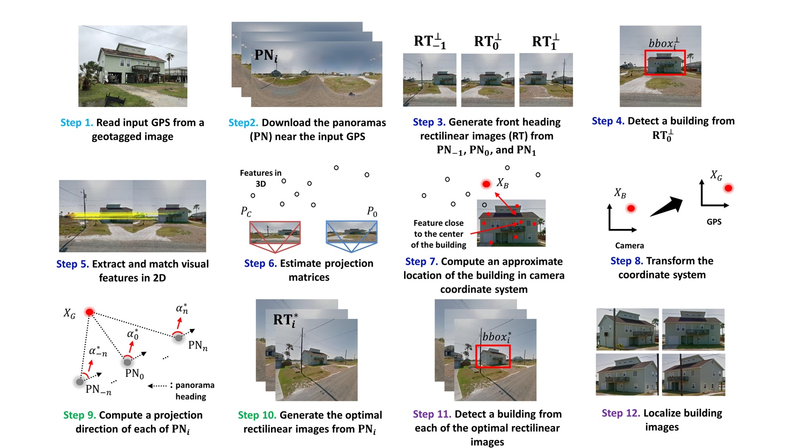
Panoramas are messy: multiple buildings per frame, occlusions, perspective distortion at the seams. The detector is panorama-aware — it reasons about which face of the sphere corresponds to which side of the street, so the same building doesn't get detected twice across the seam, and the geometry of the camera position constrains which detections are even plausible.
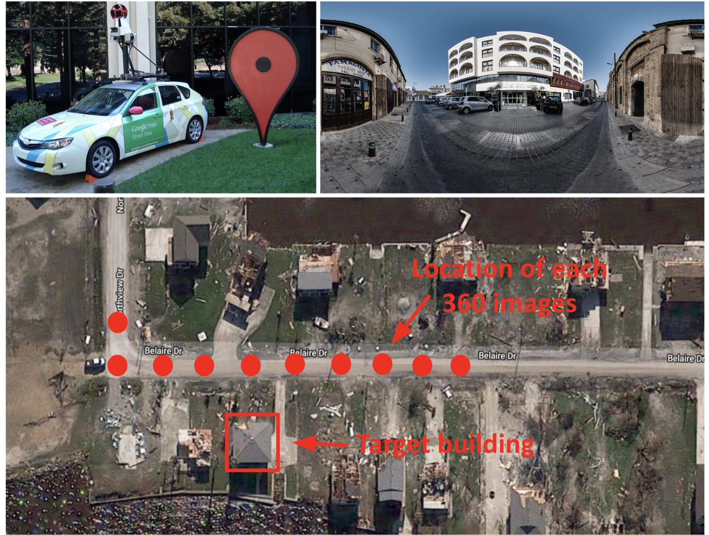
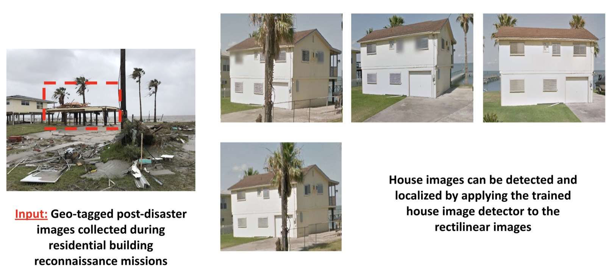
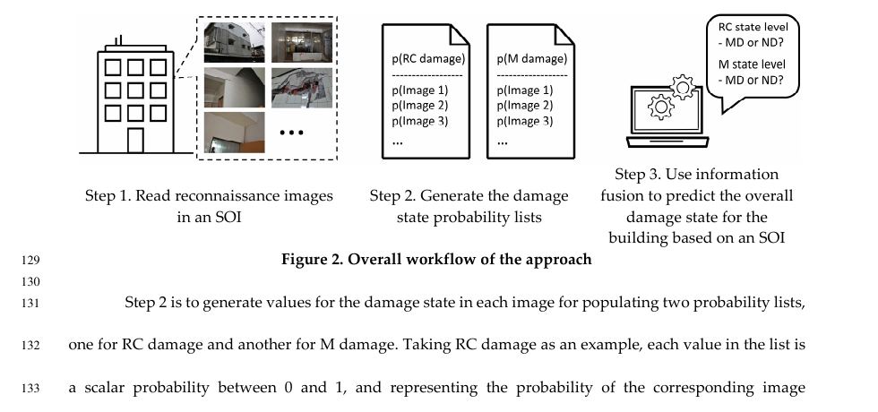
Same problem as the 2020 fusion paper, harder data: the Subject of Interest arrives as a set of images, not one. Per-image classifiers produce class-conditional probabilities for two materials (RC and masonry), then a probability-list filter and an iterative thresholding scheme combine those into a single overall damage state.
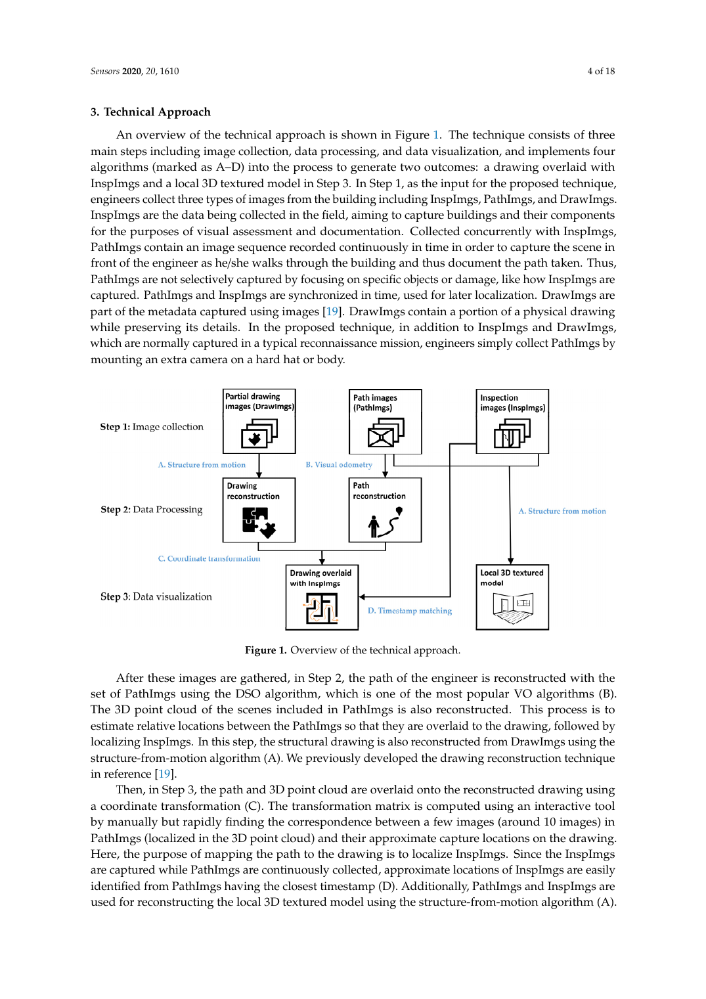
Indoor images don't get clean GPS. The pipeline runs Structure-from-Motion across a stream of "PathImgs" walked through the building to reconstruct a 3D point cloud and recover camera poses, then aligns the SfM frame onto the structural drawing via a 2D projective transform. Once that map exists, every "InspImg" — the targeted close-up engineers care about — is grounded against a drawing location.
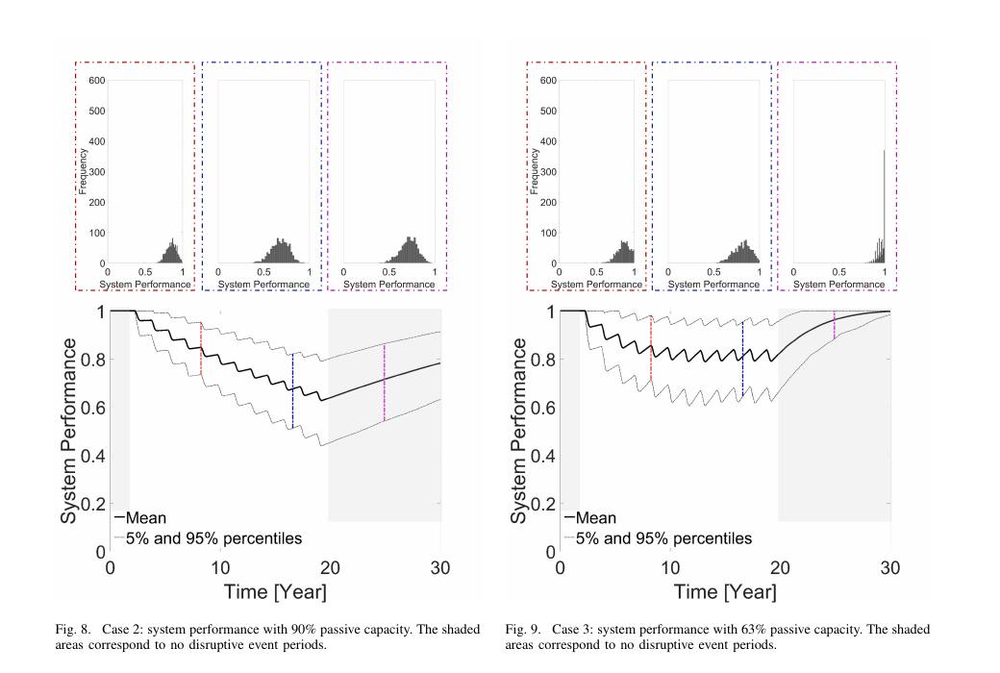
How do you design for resilience without it being a vibes-based adjective? This paper splits the concept into two components: passive capacity (redundancy, margin, robust design) and active capacity (repair, reconfigure, mitigate). Then the case study runs at 90%, 63%, and 40% passive capacity to see how the trade space behaves.
Each subsystem is a coarse input/output Markov node — power, structural, life support, environment, agent, intelligent health management — wired together into configurations. Disturbances drive state transitions; a reflexive health-management subsystem prioritizes recovery actions given limited robotic-agent availability. The output is a value metric decomposing system performance into mission-value and crew-value over the design lifecycle. Then trade studies run as risk-return scatter for every candidate configuration.
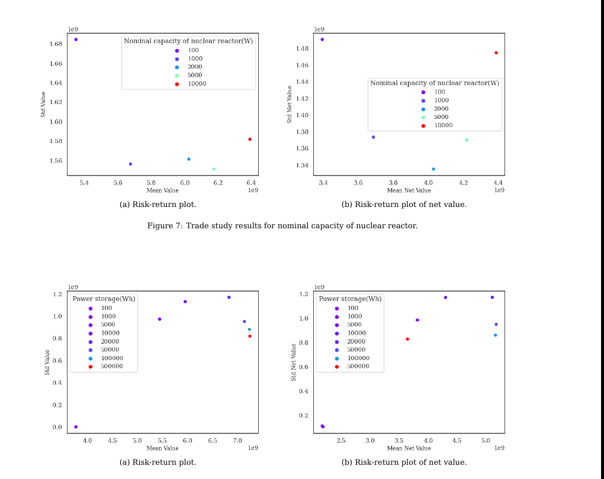
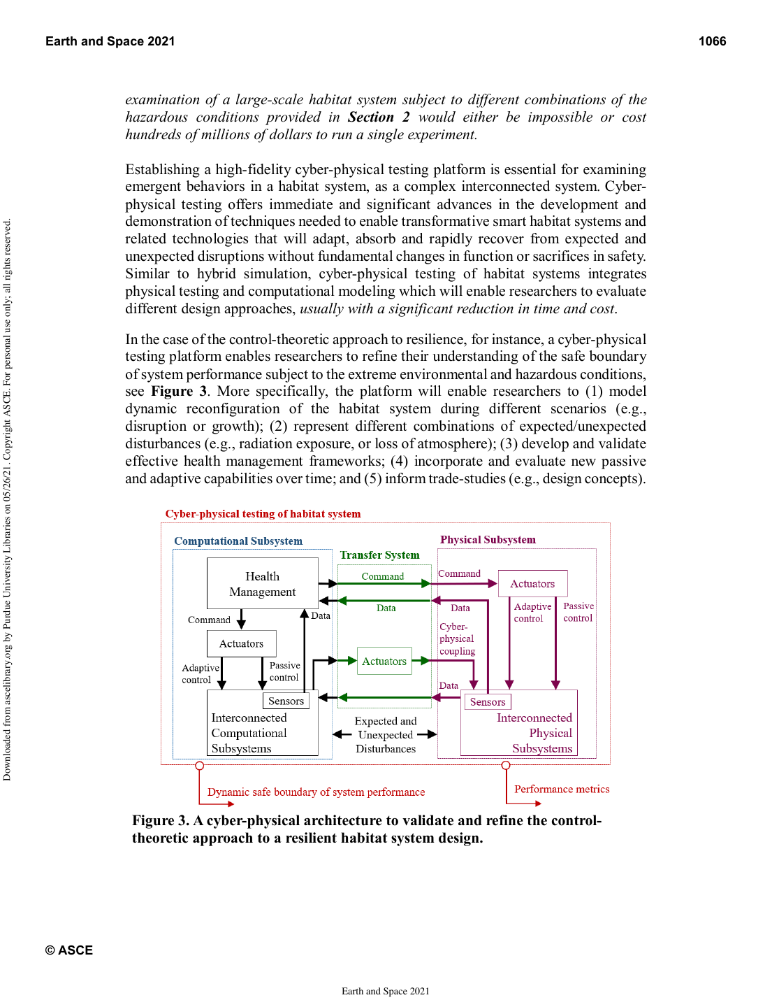
Pure simulation is cheap but lies. Pure physical testing is expensive and slow. Cyber-physical testing splits the difference: real hardware sits in a test cell while the rest of the habitat is simulated in real time, coupled through sensor and actuator interfaces. The control law sees the physical hardware's actual response and the simulated environment reacts accordingly.
Full list on Google Scholar.
Mechanical engineer who took a left turn into ML and never went back. PhD at Purdue on decision-making under uncertainty in physical systems, then postdocs at Stanford on multimodal ML for global health, and NASA STRI / Purdue on a space-habitat digital twin. Different domains, same job: build something that has to make a fast decision on real data without any of the inputs being clean.
Lately the work is mostly recommender systems and the evaluation problem around them — what to actually measure, how to use LLMs as judges without fooling yourself, and how to keep offline simulators honest about online behavior. Based in the SF Bay Area.
Happy to talk recsys, evaluation, simulation — or anything in this neighborhood.
lenjani.a@gmail.com →